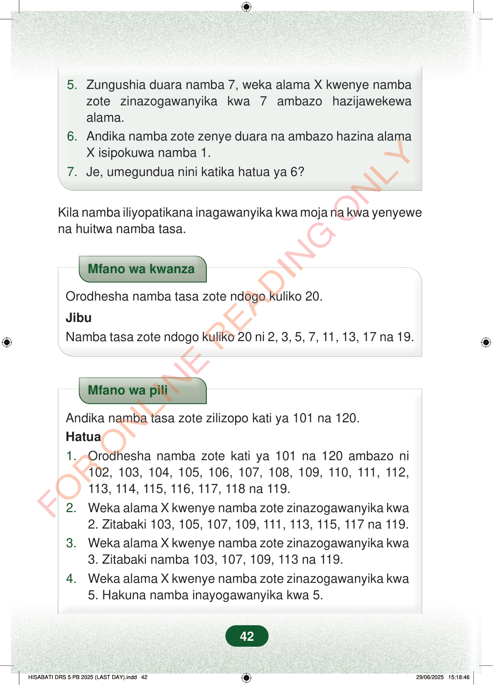

5.Zungushia duara namba 7, weka alama X kwenye nambazote zinazogawanyika kwa 7 ambazo hazijawekewaalama.6.Andika namba zote zenye duara na ambazo hazina alamaX isipokuwa namba 1.7.Je, umegundua nini katika hatua ya 6?Kila namba iliyopatikana inagawanyika kwa moja na kwa yenyewena huitwa namba tasa.Mfano wa kwanzaOrodhesha namba tasa zote ndogo kuliko 20.JibuNamba tasa zote ndogo kuliko 20 ni 2, 3, 5, 7, 11, 13, 17 na 19.Mfano wa piliAndika namba tasa zote zilizopo kati ya 101 na 120.Hatua1.Orodhesha namba zote kati ya 101 na 120 ambazo ni102, 103, 104, 105, 106, 107, 108, 109, 110, 111, 112,113, 114, 115, 116, 117, 118 na 119.2.Weka alama X kwenye namba zote zinazogawanyika kwa2. Zitabaki 103, 105, 107, 109, 111, 113, 115, 117 na 119.3.Weka alama X kwenye namba zote zinazogawanyika kwa3. Zitabaki namba 103, 107, 109, 113 na 119.4.Weka alama X kwenye namba zote zinazogawanyika kwa5. Hakuna namba inayogawanyika kwa 5.42
5. Zungushia duara namba 7, weka alama X kwenye namba zote zinazogawanyika kwa 7 ambazo hazijawekewa alama. 6. Andika namba zote zenye duara na ambazo hazina alama X isipokuwa namba 1. 7. Je, umegundua nini katika hatua ya 6?
Kila namba iliyopatikana inagawanyika kwa moja na kwa yenyewe na huitwa namba tasa.
Mfano wa kwanza
Orodhesha namba tasa zote ndogo kuliko 20.
Jibu Namba tasa zote ndogo kuliko 20 ni 2, 3, 5, 7, 11, 13, 17 na 19.
Mfano wa pili
Andika namba tasa zote zilizopo kati ya 101 na 120. Hatua 1. Orodhesha namba zote kati ya 101 na 120 ambazo ni 102, 103, 104, 105, 106, 107, 108, 109, 110, 111, 112, 113, 114, 115, 116, 117, 118 na 119. 2. Weka alama X kwenye namba zote zinazogawanyika kwa 2. Zitabaki 103, 105, 107, 109, 111, 113, 115, 117 na 119. 3. Weka alama X kwenye namba zote zinazogawanyika kwa 3. Zitabaki namba 103, 107, 109, 113 na 119. 4. Weka alama X kwenye namba zote zinazogawanyika kwa 5. Hakuna namba inayogawanyika kwa 5.
42
5.Zungushia duara namba 7, weka alama X kwenye namba zote zinazogawanyika kwa 7 ambazo hazijawekewa alama.6.Andika namba zote zenye duara na ambazo hazina alama X isipokuwa namba 1.7.Je, umegundua nini katika hatua ya 6?Kila namba iliyopatikana inagawanyika kwa moja na kwa yenyewe na huitwa namba tasa.Mfano wa kwanzaOrodhesha namba tasa zote ndogo kuliko 20.JibuNamba tasa zote ndogo kuliko 20 ni 2, 3, 5, 7, 11, 13, 17 na 19.Mfano wa piliAndika namba tasa zote zilizopo kati ya 101 na 120.Hatua1.Orodhesha namba zote kati ya 101 na 120 ambazo ni 102, 103, 104, 105, 106, 107, 108, 109, 110, 111, 112, 113, 114, 115, 116, 117, 118 na 119.2.Weka alama X kwenye namba zote zinazogawanyika kwa 2.Zitabaki 103, 105, 107, 109, 111, 113, 115, 117 na 119.3.Weka alama X kwenye namba zote zinazogawanyika kwa 3.Zitabaki namba 103, 107, 109, 113 na 119.4.Weka alama X kwenye namba zote zinazogawanyika kwa 5.Hakuna namba inayogawanyika kwa 5.5. Weka alama X kwenye namba zote zinazogawanyika kwa 7.Zitabaki 103, 107, 109 na 113.Hivyo, namba tasa zilizopo kati ya 101 na 120 ni; 103, 107, 109 na 113.